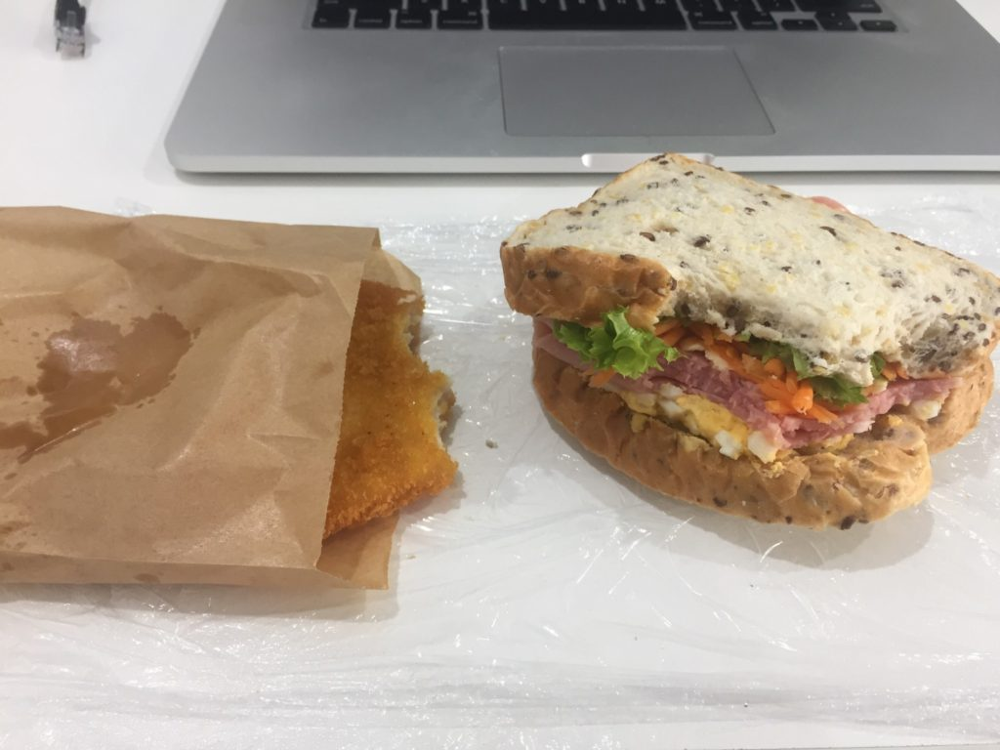
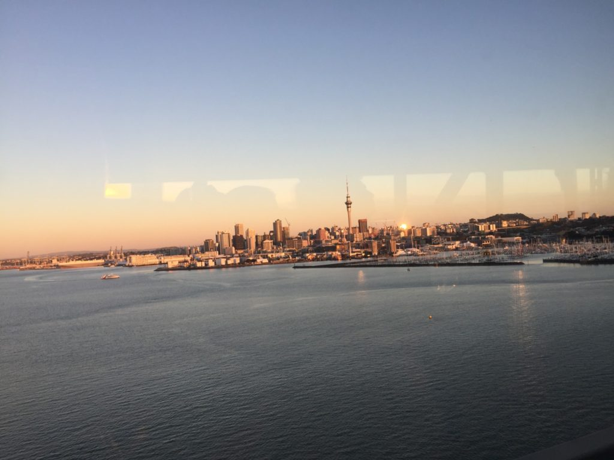

Záhada s fazolema z mýho posledního příspěvku vyvolala velkou vlnu emocí (nebo spíše pocit beznaděje), a tak jsem se rozhodl, že vám ukážu i bojovku, kterou dostala Lenka k narozeninám. Třeba si zlepšíte chuť, až to vyřešíte. A nebo taky ne 🙂
Bojovka se skládala ze tří částí. Rozluštění jedné části vždy vedlo k další.
Prvním rébusem byla stránka http://cilf.cz/pranicko.html. Pokud rozlousknete tuto prvni stranku, dostanete se k tajence, která sice byla sestrojena na míru pro Lenku, ale vy si aspoň můžete vyzkoušet, jak moc nás znáte (nebo jak moc sledujete náš blog ;-)). Po vylusteni tajenky ziskate misto, kam se Lenka musela vydat pro prvni darek a následující instrukce, podle kterých si měla dojít pro nový počítač. Samozřejmě pro třetí krok musíte znát odpovědi z předchozích částí, abyste věděli, kde v tom Brně se zrovna Lenka nacházela, když obdržela tyto instrukce:
——————
Ještě Tě čeká jedna maličkost:
Vydej se tím směrem, který NZ ostrov se nám líbil více.
Na křižovatce za tram zastávkou odboč na svou nepřirozenou stranu.
Na konci ulice se po levé straně nalézá třípatrová budova.
Řekni jim tam heslo ze svého červeného dárečku.
——————
Došli jste až pro počítač nebo jste se zasekli na stránce s přáníčkem? 🙂
Když jsem se po měsíci hledání pozice kontraktora (víc peněz než zaměstnanec) nedostal ani k jednomu pohovoru, usoudili jsme, že by to chtělo změnit strategii. Začal jsem teda psát i na inzeráty hledající zaměstnance na full-time na dobu neurčitou. No a hned v první vlně přihlášek se zadařilo 🙂
Po měsíci sezení doma na zadku jsem si řekl, že zvážím jakoukoliv práci v oboru. Že nebudu hledat výhradně pozici Java Developera. A proto jsem se vydal na North Shore (15km z centra Aucklandu, 1hod mhd) na pohovor ke Chrisovi do firmy Bosun Technologies na pozici Full Stack Developera. Jelikož mají pouze malý kanclík uvnitř veterinární kliniky, sešli jsme se ve vedlejší kavárně. Chris mi vyprávěl co dělá jeho firma, já jsem mu zase řekl něco o sobě a svých zkušenostech. Klasické první kolo pohovorů. To bylo ve čtvrtek.
Ještě ten večer mi zavolal, jestli bychom se následující den dopoledne mohli potkat v centru na druhé kolo pohovoru, kde bychom šli více do hloubky mých technických znalostí. Je to dobrý, řikal jsem si. Mam šanci 🙂
Následující den jsem oblékl další z nově nakoupených košil speciálně za účelem vypadat profi na pohovorech a vyrazil. Řešili jsme spolu jak fungují internety, trochu sítí, javascriptů, webů a vůbec všeho okolo. Bylo mi jasný, že v případě úspěchu bude mojí pracovní náplní všechno jenom ne Java. Ale to nevadí. Tak jako tak se budu hodně učit. Jedna jeho speciální otázka nebo spíše malý rébus mi utkvěl v paměti. Můžete si sami zkusit, jestli byste na to přišli:
Máte váhu, kterou můžete jednou použít. Máte 5 sklenic. V každé sklenici je 10 fazolí. Jedna ze sklenic obsahuje fazole, kde fazole váží 9 gramů. Všechny ostatní sklenice mají fazole vážící 10 gramů. Jak tím jedním vážením zjístíte, která z těch pěti sklenic obsahuje lehčí fazole?
Má se tim zjistit, jak člověk přemýšlí. A jak funguje ve stresu – Když přede mě položil telefon s běžícím odpočtem na 2 minuty. Každopádně na řešení hádanky jsem přišel a měl jsem z toho potom velkou radost 🙂
V pondělí ráno mě Chris vzbudil telefonátem, kdy mi oznámil, jestli mam opravdu o nabízenou pozici zájem. Že on má zájem o mě 🙂 A tak jsem jel hned další den podepsat smlouvu.
Že prý se mu na vypsanou pozici přihlásilo 112 životopisů. Z nich vybral 12 lidí, se kterými se sešel osobně. No a nakonec jsem dostal přednost před jiným uchazečem, který měl sice více zkušeností na papíře, ale měl menší „drive“ než já. Ať už to znamená cokoliv 🙂
Chris mě nabral na seniorní pozici. Akorát se teda podle pohovoru neví, jestli jsem opravdu senior nebo ne. Takže mám ve smlouvě „Intermediate Full Stack Developer“ s tím, že se během zkušební doby tří měsíců uvidí, jak nám vyhovuje naše spolupráce. A pokud pude všechno podle plánu a já se osvědčim, dostanu novou pracovní nabídku už s pozicí seniora a zhruba 15% přidáním na výplatě.
V nové práci mam za sebou dva týdny. Tak ještě trochu k samotné pracovní náplni. Bude to trochu více technické, takže tomu teď mami asi nebudeš uplně rozumět 🙂 Firma Bosun Technologies má na starosti několik projektů a jedním z nich je i systém objednávek a vlastně takový eshop pro veterinární kliniku (proto mají svůj kanclík přímo tam). Na frontendu bootstrap šablona s jquery. Na backendu c# běžící v mono na ubuntu. Vývoj na MacBook Pro v sublime text. Deploy kopírováním jednotlivých souborů na server. Jediný javascript soubor má asi pět tisíc řádků.
Z tohoto stavu věcí jsem byl na začátku dost smutný. Takový jakoby nemoderní způsob vývoje. Ale po dvou týdnech to nakonec vypadá zajímavě, protože jako najatý senior mam možnost spoustu věcí zlepšit a bude to hodně různorodé, takže se toho budu moci opravdu hodně naučit. První týden jsem se bavil tím, abychom zautomatizovali nasazení. Výsledkem je, že se pro vývoj i na produkci používá docker. A pro produkční build se soubory automaticky stahují z git repozitáře, takže už žádné ruční kopírování. Teď se bavím doprogramováním možnosti vrácení vadných produktů v eshopu. A protože je cílem toto eshop řešení následně přeprodávat, budu ho celé přepisovat do reactjs.
A co mí kolegové? Tak Chrise už trochu znáte. Původem Angličan, žije se svojí rodinou v Aucklandu přes pět let. Věčnej vtipálek. Má dost přehled a vlastně on je důvodem, proč jsem kejvnul na tuhle pracovní nabídku. V kanceláři tráví asi tak polovinu pracovní doby.
Nastya je Ruska s asijskými předky. Je jí asi 35 (na asiatech se to moc nedá poznat) a v Aucklandu bydlí 4 roky. Tolik je Ukrajinec a je mu asi tak 25. Vlastně jsem se na jejich věk nikdy nezeptal..
Teď, když už mam práci, tak si můžeme najít nějaké pěkné bydlení poblíž. Zatim bydlíme v centru a jedna cesta autobusem do práce trvá zhruba hodinu, což neni uplně ideální. Ale o tom zase někdy příště 🙂
Kousek od práce je pekárna, kde se dá za $7 ulovit takovýhle obědový kombo Pohled na centrum cestou z práce z autobusu. Kousek od tý věže teď bydlíme
Proč bychom sem měli psát každej den? Sorry jako. 🙂
Ale popravdě to teď uplně nebylo naší prioritou. Navíc jsme opustili cestovatelský režim a pozvolna přešli zpátky do reálného života. A je to teda drsný.
Z města Rotorua jsme jeli tou nejpřímější cestou do Aucklandu. Bylo tam po cestě ještě pár zajímavostí, ale protože byla předpověď počasí naprd, tak jsme si řekli, že se tam někdy vrátíme z Aucklandu o víkendu. Je to pod dvě hodiny cesty.
Na první dvě noci v největším městě NZ nám přístřešek poskytl Ondra. Tímto ještě jednou velice děkujem 🙂 Měli jsme tak šanci promyslet, jak přesně chcem na začátku postupovat. Vyšlo nám z toho, že než si najdem práci, tak by to chtělo levnější ubytování. Dočasně tak bydlíme kus za městem (20min autem, 1hod busem do centra) u Číňana přes airbnb. Klasickej barák okupujeme s dalšíma dvěma párama. Aspoň mi má kdo dělat společnost při večeři, když Lena zevlí v posteli na skypu nebo u seriálů.
A co ty práce? No já si hledam pozici Java Developer – vlastně to, co jsem dělal v Praze. A protože se toho nebojim, hledam seniorní pozici. Jakože jsem hodně zkušenej a dobrej v tom, co dělam. Tak uvidíme, jestli to klapne 🙂
Jinak je to podobný jak v Česku. Jsou tu dva typy možnosti spolupráce. Buď jako contractor (naše OSVČ) nebo klasickej zaměstnanec. A jako u nás, contractor bere daleko víc a je placenej od hodiny. Navíc jsou tu kontrakty fixní (většinou s možností prodloužení) na 3 nebo 6 měsíců. Takže pro mě ideálka, jestli se budeme vracet do ČR. Na druhou stranu kontraktorských pozic neni tolik. Třeba každá desátá. Takže tomu dam ještě tak tejden nebo dva a pokud se nezadaří, tak bych začal zkoušet i ty zaměstnanecký pozice. Akorát tam je to komplikovanější. Jednak si myslim, že se uplně firmy nepohrnou do nabírání blázna, co se nejspíš za půl roku vytratí. Dále mi vízum zakazuje mít permanentní pozici, takže bych si musel domluvit, aby mi na jinak permanentní smlouvu dali datum ukončení spolupráce. A nebo by mi museli zasponzorovat pracovní vízum. No je to legrace 🙂
A jsem z toho hledání trochu nešťastnej, protože tu pracujou hodně s AWS nebo hledaj Full Stack Developery, jakože k Javě hledaj i AngularJS nebo React v jednom. Moc tomudle přístupu nerozumim, ale je to tak. Což mě teda trochu diskvalifikuje, protože ani s jednim moc zkušeností nemam. AWS jsem se rozhodl dohnat, tak se teď učim na AWS Solutions Architect certifikaci. Abych se při tom čekání na pohovory moc nenudil. A pak začnu dohánět i ten frontend. Tak proto bylo psaní příspěvků odsunuto na druhou kolej.
No a Lenka si zatim hledá cokoliv poblíž, kde teď bydlíme. Protože plán je takovej, že já si najdu práci, pak si poblíž mý práce najdem bydlení a pak si Lenka najde něco v okolí.
No tak co ještě bych vám pověděl? Včera (1. 4.) tu byl významný den. Měl jsem narozeniny 😀 Lenka o mě celý den pečovala (více než obvykle). K obědu mi uvařila mojí oblíbenou rajskou omáčku, jako dezert pak upekla cheesecake. A dostal jsem kokosový olej, takže jsem si mohl vychutnat moc příjemnou masáž 🙂 A já si včera dopřál hned tři sprchy! A 10km běh k tomu.
Zajímavý, jaký všechny věci člověk bere za samozřejmý. Po 4 měsících strávených v autě si na našem airbnb moc užíváme:
na záchod (hlavně v dešti) se nemusí ven ke stromku
člověk si může kdykoliv dopřát (teplou) sprchu
nemusí se řešit, jak moc je nabitej notebook nebo powerbanka
stabilní wifi internet
lednice chladí sama od sebe a nemusí se do ní tak kupovat zmražený potraviny nebo chlazený pivko, aby udržela teplotu – narozdíl od našeho chladícího boxu
no a vlastní pračka taky neni uplně k zahození 🙂
Tak zas někdy příště 😉
Kam to asi vede? #nofilterKdyž já chodim po meet upech, abych návazal kontakty kvůli práci, Lenka mezitim zevlí v parku a fotí takovýhle nádhery.Na pohovory to chtělo trochu lepší oblečeníPark nedaleko od Ondrovo bytu. Dost v centru města.Pohled na downtown cestou z jednoho pohovoru.Zbytek narozeninového cheesecake. Rajskou vyfocenou nemam, ta byla hned snězená 🙂
Vydali jsme se na další zvířecí farmu. Pravidelný čtenář si již jistě povšiml, že se nějak podezřele často vyskytujeme na těchto místech. A není tomu náhodou. Lenka by si totiž po návratu do ČR chtěla také založit zvířecí farmu, kde by si dětičky z Brna mohly pohladit a pochovat různá domací zvířata. Že prej to je její celoživotní sen. A kdo jsem já, abych jí po jejích snech šlapal, že? Takže se snažíme navštívit každou farmu v okolí, abychom načerpali inspiraci 🙂 A jaká že byla tahle farma?
Velkou výhodou Lilliput Farm Fun & Animal Park bylo množství stromů na jejich pozemku. Ty tak poskytovaly příjemný stín jak pro nás, tak pro zvířata. Dále potom jednoduchá okružní cesta, po které se šlo a člověk tak viděl všechna zvířata a nemusel moc řešit, kudy se má vlastně vydat. Ze zvířat nás nejvíce bavil chlupatej bílošedivej oslík a bílej papoušek. Ten si natažením pařátku vynutil svezení na ruce a vůbec se mu nechtělo zpátky na bidýlko. Musela nás zachránit majitelka farmy a ptáka zpátky nalákat na křupku 🙂 Uplně nejlepší bylo, že se papouch nechal hladit. A měl radši chlapy než ženský. A neměl rád děti. Prostě správnej charakter 🙂 Sympatický taky bylo malý prasátko, který se připojilo k člověku na začátku farmy a celý okruh nám dělalo společnost.
Při opouštění farmy jsme si všimli letáku s farmou s čerstvým mlékem. Takže vám může být hned jasné, kam se následně ubírala naše cesta 🙂 Lenka opět podojila automat o litr lahodného čerstvého mléka a ještě k tomu jsme pokecali se zjevně se nudícím farmářem.
Dále jsme navštívili Huka Falls. Cizím obrázkem níže si ušetřím 1000 slov. V brožuře psali, že prej tudy za 11 vteřin proteče jeden olympiskej stadion. Moc si to teda nedovedu představit, když vezmem šatny a tribuny a parkoviště a bůhví co ještě. Ale tak asi to bude pravda, když to tam píšou.
Ne, nepořídili jsme si drona. Je to cizí obrázekPohled z mostu nahoruPohled z mostu doluUplně dolePovinná selfie fotka
Následovala návštěva Craters Of The Moon. Za malý poplatek si člověk mohl projít asi hodinovou cestu jakoby měsíční krajinou se spousty kouřícími krátery. Ptáte se, proč kouří? Mezi městy Taupo a Rotorua se nachází aktivní geotermální půda, takže skoro každá škvíra tady vypouští páru se silným sirným zápachem (asi jako zkažený vejce). Je tu také spoustu teplých (až horkých) pramenů, řek, vodopádů, gejzírů a různých bublajících (vařících) jezírek.
Smrdí, smrdí to to smrdí
Po kráterech se Lenka dočkala vytoužené sprchy. Už jsem vypozoroval, že po pár dnech bez možnosti si umejt hlavu se Lenka začne jakoby měnit 😀 A člověk pak moc nechce bejt poblíž té nové Lenky 😀 Každopádně sprcha byla pouze kraťoučká, protože jsme jednak museli mazat na další atrakci a druhak byla veřejná placená, takže tekla přesně 4 minuty. Výborná příležitost trénovat pozitivní myšlení. Takže se mi Lenka vrátila ze sprchy celá usměvavá, protože byla moc ráda za tu skvělou a jedinečnou příležitost si umejt hlavu a vůbec vlastně nenadávala a nebyla nasraná, že ta sprcha byla moc krátká a že pak slíbená studená voda už netekla a že nestihla tohle a tamto. Dobře no, bylo to přesně opačně 😀
Pospíchali jsme, protože přesně ve čtyři hodiny odpoledne nechaj na chvilku protejkat místní vodní elektrárnu. Díky tomu má člověk možnost vidět, jak se skalnatý kaňon postupně zaplňuje vodou až do divoké řeky.
Před, 16:00Po, 16:05
Tím bylo město Taupo vyčerpáno a pokračovali jsme severním směrem. Cestou jsme potkali bazének s teplou vyvěrající vodou jménem Butchers Pool (řezníkovo bazén). Pamatujete, jak jsem mluvil o tý geotermální aktivitě, že? Tak tady si to obetonovali a udělali tak z toho takový veřejný neplacený lázničky 🙂 Voda ale byla dost špinavá, tak jsme si pouze ocachtali nohy.
řezníkův bazének
Další zastávkou byla Hot’n’Cold řeka. Velice zajímavý úkaz, kde se spojují dva prameny. Jeden je studený a druhý horký. Díky tomu si koupající se člověk v soutoku může jednoduše „nastavit“ tu správnou teplotu. Super relax zadarmíko místečko. No já tam byl naprosto v zenu. Lenka o trochu méně 😀 Protože si po ohrožení života amébou v minulých minerálních lázních vypěstovala fóbii na teplou minerální vodu obsahující tuhle měňavku. Naštěstí se po chvilce uvolnila a oba jsme si tak mohli užít tohle skvělý místečko.
Docela nabitý den, co? Začalo se stmívat a my našli útočiště na jednom opuštěném parkovišti. Zelený trávníček vedle auta nás ještě vyzval k cvičení, po kterém jsme upadnuli do postele (nebo co to v tom autě vlastně máme).
Středa
Po probuzení jsme zkontrolovali Mud Pool, který se nacházel hned u našeho parkoviště. Velké bahnité jezírko, které nepřetržitě bublá a vydáva roztomilé zvuky. Nějakym zvláštním způsobem je pro mě pozorování bublajícícho bahna stejně uspokojivé jako sledování vodopádu.
Mud Pool
Následovala procházka na vrcholek Rainbow Mountain. Bylo to naplánované tak, abychom nahoru dorazili kousek před 10:15, protože v tento čas se uměle aktivuje (nasypání mýdla) jeden z velkých gejzírů o kousek vedle v placeném parku. Bohužel jsme žádný gejzír neviděli :-/ Alespoň jsme na druhé straně kopce spatřili úchvatně vypadající kopečkovitou krajinu.
Po obědě jsme dorazili do města Rotorua. Nejdříve jsme se prošli po místním sekvojovém lese. Zastavili jsme se na vyhlídce, odkud byl vidět další gejzír. Ten měl vrcholit jednou až dvakrát za hodinu. Když jsme tam dorazili, tak gejzír trošku prskal. Tak že si na tu erupci počkáme. Po hodině čekání gejzír přestal frčet uplně. V tu chvíli jsme si uvědomili, že celou tu dobu jsme vlastně koukali na to nejlepší, co ten gejzír dovede. No nevadí.
Vlevo jemně stříkající – hlavně čoudící – gejzír
Z knižního průvodce Rough Guide (díky Kartičovi s Veru za skvělý dárek 🙂 ) jsme se dozvěděli, že místní ptáci nemusí sedět na vejcích. Proč? No přece protože je zdejší půda díky geotermální aktivitě tak teplá 🙂 A teď tuhle blbost už nikdy nezapomenete 😉 Jo a ty sekvoje tu rustou třikrát rychleji než v jejich domovské Californii. Toliko asi k naučným zajímavostem.
Vodní hladina vypadající jako sklo
S autem zaparkovaným docela v centru města jsme šli obhlídnout okolí. Nejdříve zahrady. Jak jinak než plné sirných smradlavých bublajících jezírek. V centru města jsme si dali boží točené pivko s ještě skvělejšíma křídlama. Musíme se přece za to bydlení v autě taky někdy trochu rozmazlit 🙂 Potom jsme zabrousili do dalšího parku, kde jsme objevili bazénky s teplou vodou hluboké tak akorát na ponoření nohou. Jenom škoda, že byly obklopené heštegama, áčkama nebo prostě asiatama. I tak jsme se vmáčkli a chvilku dali již docela uchozeným nohou odpočinout v teplé smradlavé lázni.
Mňam
Po parku jsme se již začli vracet zpátky k autu. Posledním zajímavým místem byla původní maorská vesnice. Dnes už vlastně takové menší chudší předměstí. Ze skoro každého kanálu se tu line všudypřítomná sirná pára. Opravdu celé město smrdí po zkažených vejcích. V průvodci tvrdili, že si na to člověk po chvíli zvykne. NE! Neni tomu tak 🙂
První na programu dne byla návštěva Waikoropupu Springs. Údajně druhá nejčistější voda na světě. První je nějakej zmraženej kus ledu na Antarktidě. Pramen to je opravdu úchvatný. Obrovské množství vody vyvěrá jakoby odnikud a celé je to doplněné kachnama a krásnou vegetací okolo. Koupat se v tom ale nedá. Je to posvátný, takže se toho člověk nemůže ani dotknout. Tak jsme se moc dlouho nezdrželi.
Pak jsme navštívili jeskyni Rawhiti Cave. Ta je zajímavá tím, že zde krápníky žijou v symbióze s mechama. Dohromady tvoří fialovo-šedo-zelený les více jak tisíce stalagnátů. Ale protože do jeskyně se dá pouze nahlédnout z vyvýšené plošiny, ani tady jsme se dlouho nezdrželi. Zmlsanej zdejšíma jeskyněma nabitýma dobrodružným prolézáním a svítícíma červama tuhle poslední jeskyni hodnotim jako těžkou nudu.
Inu vydali jsme se směrem k tracku Abel Tasman. Největšímu turistickému lákadlu zdejší oblasti. Cestou jsme ovšem potkali farmu, která nabízí čerstvé mléko. Lenka se uplně splašila a že prej se tam určitě musíme zastavit. Otočili jsme to a ten automat jsme podojili o litr čerstvého mléka. Lenka z toho byla uplně v rauši. Že prej to hodně pila, když byla malá. Je ale pravda, že to mlíko chutnalo opravdu dobře a celý litr jsme vypili na posezení.
Tohle dojení by jí šlo
Posilněni čerstvým mlékem jsme si dali procházku jménem The Grove – limestone boulder garden jungle. Džungle plná vápencových kamenů. Kratičká, ale zajimavá.
Na spaní jsme zaparkovali hned u silnice, kde prý nějaká pani každý ráno v sedum hodin prudí, že se tam nespí přespávat. Řekli jsme si, že jí ošálíme a nařídili si budíka na 6:30 😃
Středa
Opravdu se nám povedlo vstát brzo ráno a vyrazit k severní části Abel Tasmana. Šli jsme část od Totaranui k Separation Point a zpět. Dohromady okolo patnácti kilometrů. Cestou jsme potkali opravdu zlatavé pláže a na samém konci i pár lachtanů. Ale druhé Vánoce se u Lenky dostavily ve chvíli, když kolem nás proplaval tučňák! Byl zrovna na lovu. O chvíli později jsme ho spatřili ještě jednou na druhé straně Separation Pointu. Je to vskutku zajímavý pohled vidět tyhle zviřátka v jejich přirozeném prostředí. No co vám budu povídat, zase jsem nemohl Lenu tam odsud dostat 😀
Na jedný straně písčitá, na druhý straně kamenitá pláž. No kdo to kdy viděl?
Cestou zpátky jsme dali na jedné z pláží koupačku. Voda ale byla moc studená a na sluníčku to zase moc pálilo. Navíc si Lenka (když jsme se od začátku plánovali koupat) zapomněla ručník 😀 Takže jsme na pláži moc nepobyli a razili jsme zpět k autu.
No a abychom ze sebe smyli tu slanou vodu, zamířili jsme si to k vodopádu. Nebyl špatnej, ale dělal hroznej rámus, a proto jsme si našli koupací místečko kousek po řece. Voda byla ukrutně ledová a navíc na nás bylo hrozně moc vidět z pěší cesty vedoucí k vodopádu. Což zjistila zrovna Lenka, když nějakej pán s úsměvem na tváři hodnotil její zadek v tangách. Což zase hodnotila zcela negativně pánovo manželka. No já se bavil 😀
Čtvrtek
Celý Abel Tasman trek je vícedenní. Nejobvyklejší varianta trvá 3 dny a člověk během této doby musí spát v místních oficiálních chatách. Které jsou ale jednak docela drahé a druhak hodně dopředu zamluvené. Ani jedno nám moc nehrálo do karet, a tak jsme zvolili variantu vidět kousek ze severní části a kousek z jižní časti. Ráno jsme se nechali lodí dovézt kus po směru chůze (do Anchorage bay) a došli jsme si to zpátky k autu. Nejvtipnější bylo, že jsme se nalodili už na souši u kanceláře lodní společnosti a až traktor nás dotáhl na pláž a nacouval s náma do moře 😃
Lenka si cestu lodí moc neužila, protože po ranním kafi se jí ukrutně chtělo na záchod. I když čůrala těsně před odplutim. Ale zvládla to a udržela to. Jinak jižní část tohoto treku jsme shledali dosti nudnou a ani cesta lodí to nezachránila. Asi už jsme zmlsaní zdejší přírodou. Přece jenom máme možnost toho vidět daleko víc než běžný turista, který prolétne celým jižním ostrovem za dva týdny.
Rozpůlený kámen. A jaká je vaše teorie způsobu rozpůlení?
Odpoledne jsme si dali relax a prošli jsme si městečko Motueka. Centrum v podstatě podél hlavní cesty. Moc toho tam neměli, tak jsme si aspoň u parčíku uvařili moc dobré krevety se zeleninou a quinou.
Pátek
Hlavním programem byla návštěva Animal Farm. Ale ta otevírala až v deset. Což bylo super, protože jsme konečně mohli dospat. Ještě jsme se cestou stavili pro zrovna nasbírané čerstvé jahody. A vůbec. Tady na severu (kde je tepleji) je spoustu sadů a plantáží, takže se tady hojně vyskytují podomní prodeje vypěstovaných produktů přímo ze zahrady, což je super. Ale místo výběrčího peněz tam člověk potká jenom dírku na peníze. Říkaj tady tomu Honesty Box. Prostě stará dobrá poctivá platba za odebrané zboží.
Na farmu jsme dorazili o půl jedenácté. Což bylo právě včas se porozhlédnout a připravit se na kozí závod, který startoval v jedenáct. Docela legrační program (spíše pro děti). Čtyři mladé kozí závodnice se vypustí ze startovací klece a musí doběhnout asi padesát metrů přes různé překážky až do cílové pásky, kde na ně čekají lahve s mlíkem. Jinak jsme tam viděli spoustu zvířátek – k prohlédnutí na fotkách. Cenu za roztomilost suverénně vyhráli malí pašíci a mládě páva 😃 A Lenka si opět potvrdila (po Vietnamu), že má jakési spojení vyššího druhu s vodním bůvolem 😀 Jinak v porovnání se zvířecí farmou v Kaikouře se nám tahle zdála moc velká a roztahaná.
Jak ze Shreka
Poté jsme se stavili u malé pobřežní promenády. Nic nás tam ale jídelně nezaujalo, a tak jsme spáchali michaná vajíčka s paprikou. Co nás ale velice zaujalo byl obchůdek s klobouky. Já už jsem se dlouhou dobu porozhlížel po nečem, co by mě ochránilo před zdejším vražedným slunkem a nemělo to rovný kšilt 😃 A Lenka mi tady vybrala slamák 😃 Navíc byl v bezkonkurenční akci jeden za $10 nebo dva za $10, a tak si teda Lenka vybrala taky jeden. Ten její princeznovskej můžete vidět níže na fotkach, ten muj třeba někdy příště 😃
Odpoledne jsme dorazili do města Nelson. Lenka si v obchodě se sportovníma potřebama vyměnila reklamací boty, které se jí po pár dnech nošení rozlepily, za nové. Tak schválně, jak dlouho vydrží tenle pár. Taky vyreklamovala legíny, které se začaly neskutečně párat. Bohužel zde už stejné neměli, a tak jsme nenašli náhradu a vrátili nám peníze. Což je sice fajn, ale ne tak moc pro Lenku, která si je zamilovala. Život je boj no. Abychom trochu pozvedli náladu, koupili jsme aspoň náušnice 😃 A hned bylo zase dobře 😃 Prošli jsme si kousek města podél řeky a zamířili do auta. Přece jenom toho už dneska bylo dost.


{kind=link}
{kind=link}